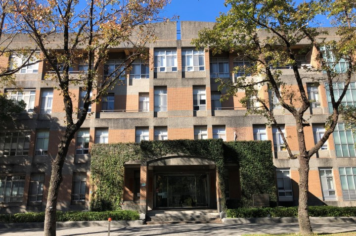
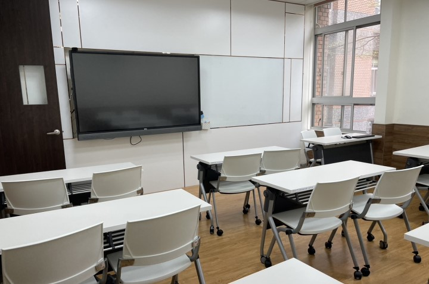
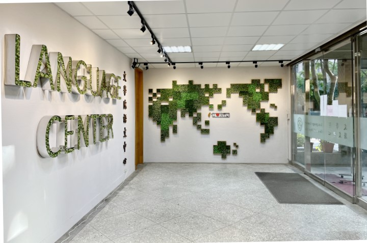
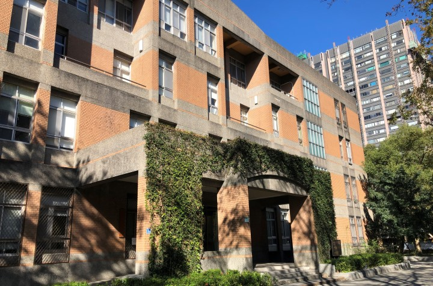
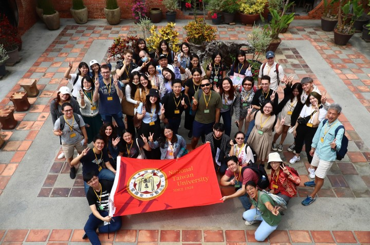
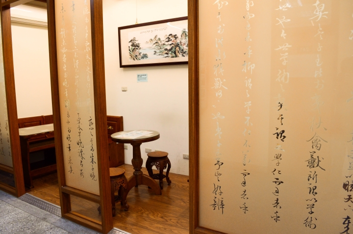

國立臺灣大學文學院語文中心中國語文組成立於1984年10月，辦理有關中國語文之訓練及研究事項。
本組成立初期只開設兩種華語班：「外籍生國文輔導班」及「研究資料輔導班」。然近年來世界興起一股學習華語的熱潮，與本校簽有合作協議或有意進行合作之外國大學紛紛表示希望選派學生前來進修華語。為因應國際文化交流之需求，並促進華僑、華裔及外國人士對我國之認識，滿足國內外人士學習華語、其他國家語言及華語文師資之需求，本組方於 2000 年陸續開辦各項對外華語課程。
目前開設班別有：
（一）華語研習班
本班別教授華語，招收對象為外籍學生。除自費生外，亦有透過本校國際事務處而來的交換生。每年分為春、夏、秋、冬四期，春、夏、秋每期皆12週，唯冬季班每期10週，並依學生中文程度分為不同級次。上課採 6 至 8 人之小班教學，以確保學員在聽、說、讀、寫上均有顯著進步。
（二）華語師資研習班
本班別教授華語教學方法與實習，招收對象為本國籍有意從事華語教學之大學畢業生，或正從事華語教學之教師。華語師資研習班每年度辦理3期，每期學生數約35~40人。
組織：
本組設組長一人，職員若干名。
本組組長由臺大中國文學系教授兼任，歷任組長分別為徐富昌先生、蔡振豐先生、陳志信先生、張麗麗先生、趙飛鵬先生、丁亮先生、伍振勳先生、林宏佳先生、蔡祝青先生、史甄陶先生、張宇衛先生。現任組長為中文系助理教授李馥名先生。
教學設備：
本組課程皆利用語文中心教室進行，各教室皆配備電腦、投影機、錄放影機及錄放音機。除此之外，另設有：
語文中心無線網路。
自習空間。
本組華語班學生亦可憑學生證使用台大校內設備如：
圖書館：憑證入館，如欲外借書籍，需另辦借書證（免費）。
綜合體育館：至體育館繳費辦證，即可使用溫水游泳池、健身房、壁球室、羽球場、桌球室等設備。
The Chinese Language Division in the Language Center of National Taiwan University (NTU) was established in October 1984. We offer training and help conduct researches on Mandarin Chinese.
Our division originally offered only two programs, “Chinese Program for Foreign Students” and “Core Research Courses.” However, due to the rapidly growing population of foreigners learning Chinese in recent years, the foreign universities that have signed educational cooperation agreements with NTU, or those that will attempt to work with NTU in the future, have been expressing their wishes to send students here to learn Chinese. To cater to such needs as to facilitate international communications, for Chinese expatriates or foreign nationals to better understand our country, and for people from all over the world to learn Mandarin Chinese, other national languages of Taiwan and pedagogy of the Chinese language, our division started to offer Chinese courses in the year of 2000.
Currently, the courses include the following:
(I) Mandarin language program
This program offers Chinese courses to foreign students. The class consists of regular, paying students and also of exchange students, as arranged by our Office of International Affairs. The terms begin every spring, summer, fall and winter. The spring, summer and fall terms last for 12 weeks and the winter term lasts only 10 weeks. The program offers leveled courses, ensuring that students are placed in classes appropriate to their language proficiency. Each class is composed of about 6 to 8 people to ensure that each member improves greatly in listening, speaking, reading and writing in the class.
(II) Chinese teacher training course
The course is offered to those who wish to learn the Chinese teaching methodology and practical teaching techniques. The course is open to Taiwanese university graduates or current Chinese teachers. Four classes are offered per year to future Chinese teachers. There are about 35~40 students in each class.
Organization:
The CLD has a director and several staff members.
The director of our division is chosen from the professors of the Department of Chinese Literature at NTU. The previous directors were Fu-Chang Hsu, Chen-Feng Tsai, Chih-Hsin Chen, Li-li Chang, Fei-Pang Chao, Liang Ting, Zhen-Xun Wu, Horng-Jia Lin, Chu-Ching Tsai, Chen-tao Shih and Yu-Wei Chang. This position is currently held by Fu-Ming Lee.
Facility:
All classes provided by our division are conducted in the classrooms of our language center, each of which has a computer, projector, VCR and video-cassette recorders. We also provide:
Free WiFi.
Studying spaces.
Chinese course students who study in our division are given student cards, which grant them access to NTU campus facilities and buildings such as:
Library: Our students can enter the library with their student cards. If you want to borrow books from the library, application forms need to be filled to get a library card (for free).
National Taiwan University Sports Center Complex:
After they fill out the application form in the office and pay the fee, students will be given an authorization card, which grants access to facilities such as a warm-water swimming pool, a fitness center, squash courts, badminton courts, billiard rooms, and more.
国立台湾大学文学院言語中心内の中国語センターは、1984年10月に設立されました。中国語と中国文学の学習および研究を担当する、専門機関となっております。
設立初期には、「外国人学生への中国語指導コース」と「研究資料（読む、探す）の指導コース」の２種類の課程のみが設立されましたが、近年は世界中で華語学習ブームが起きている故に、本学と学生交流協定を締結している大学、および交流協定締結を考慮する大学側から、本学に留学を派遣して華語（中国語）を学習させるという要望が高くなりました。国際文化交流の発展を目指し、華僑．華人と外国人に対してわが国の認識を深めるために、新しい華語課程を設立する必要がありました。国内外の方々への華語．他の台湾国家言語などの指導、華語教育者の養成など、様々な要求に応じ、外部に向けて華語課程を展開しています。
現在本組で設立されている課程は、以下の2つになります。
（一）華語学習コース
このコースで中国語を学ぶのは、自費で中国語を学習する外国人および、本学の国際事務處派遣された交換留学生です。毎年は春．夏．秋．冬の4学期に分かれ、春．夏．秋は1２週間、冬は10週間となっています。学生の能力に応じ、レベル別にクラスを分けて授業を行います。少人数制のクラスのため練習する機会も多く、聞く．話す．読む．書くの4つ能力が、はっきりと向上できます。2005年から、本学で学籍を持つ外国人新入生に向け、新しいコースが設立されました。
（二）華語教師養成コース
このコースは、華語教師になりたい本国人に向け、華語の語学教育方法と実習を教えます。特に大学卒業生もしくは外国人に華語を教える方へのトレーニングコースです。華語教師養成コースは１年間に３回開かれ、毎回の定員は約30~45人です。
編制：
係長一名と職員若干名です。
中国語組の係長は、台湾大学中国文学系の教授が担当します。歴代の係長は徐富昌先生、蔡振豐先生、陳志信先生、張麗麗先生、趙飛鵬先生、丁亮先生、伍振勳先生、林宏佳先生、蔡祝青先生、史甄陶先生、張宇衛先生です。現在の係長は、台湾大学中国文学系の助理教授の李馥名先生です。
教育設備：
本コースの授業は全て、言語センターの教室で行います。教室内にはコンピューター、マルチメディアプロジェクター、DVDレコーダー、 デジタルレコーダーなどが揃っています。教室外の設備もあります：
言語センターの無料WiFi。
学習スペース。
本コースの学生は学生証を持った上で、台湾大学キャンパス内の設備が利用できます。
図書館：学生証を所持する方は入館できますが、本をお借りになりたい場合は「登録申込書」を書き、「図書証」を申請してください（無料）。
総合体育館：体育館で入館証と施設使用料を払い、温水プール．ジム．ウオールハンドボール室、バドミントン場、卓球室などの施設が利用できます。
|  |  |  |
|  |  |  |